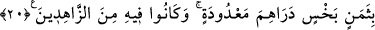

KUYUDAN MISIR’A
19. Bir kervan geldi ve sucularını (kuyuya) gönderdiler, o da (gidip) kovasını
sarkıttı. (Yûsuf’u görünce) “Müjde! İşte bir oğlan!” dedi. Onu bir ticaret malı
olarak sakladılar. Allah onların yaptıklarını çok iyi bilendir.
20. (Kafile Mısır’a vardığında) onu değersiz bir pahaya, birkaç dirheme sattılar.
Onlar zaten ona değer vermemişlerdi.
21. Mısır’da onu satın alan adam karısına: “Ona değer ver ve iyi bak! Umulur ki
bize faydası dokunur ya da onu evlat ediniriz.” dedi. İşte böylece (Mısır’da
adaletle hükmetmesi) ve kendisine (rüyada görülen) olayların yorumunu
öğretmemiz için Yûsuf’u o yere yerleştirdik. Allah, emrini yerine getirmeye
kadirdir. Fakat insanların çoğu bilmezler.
22. (Yûsuf) tam erginlik çağına erişince, ona (isâbetle) hükmetme (yeteneği) ve
ilim verdik. İşte biz, güzel davrananları böyle mükâfatlandırırız.
Medyen taraflarından Mısır’a doğru gitmekte olan “bir kervan” bir kafile “geldi” ve
Yûsuf’un bulunduğu kuyuya yakın bir bölgede konakladı. Bu, Yûsuf’un kuyuya
atılışından üç gün sonra oldu. Kâşifî: “Dördüncü gün Yûsuf’a kurtuluş müjdesi ulaştı.”
der.
Semerkandî Bahru’l-ulûm’da şöyle der: “Bu kuyu yerleşim yerlerinin uzağında bir
çukurda olup sadece çobanların işine yarıyordu. Kervandakiler buraya yollarını
kaybettikleri için gelmişler ve kuyunun yakınlarında konaklamışlardı.”
Ancak bu izah, 10. âyetteki “kervanlardan biri görüp onu alsın” ifadesine zıttır.
Çünkü bu ifade, kuyunun emin ve işlek bir yerde olmasını, bu kervanın da kendi yolunda